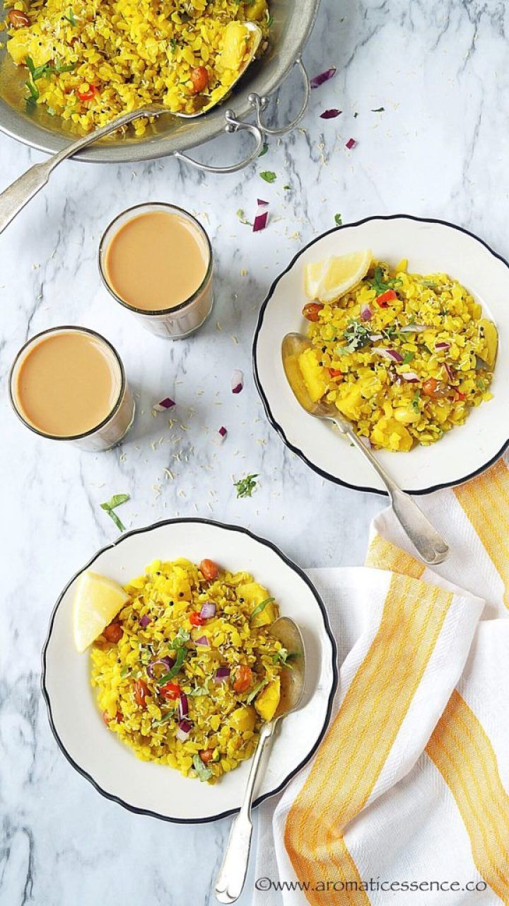

Delicious Pohe Recipe
Ingredients:
- 1 cup flattened rice (poha)
- 1 onion, finely chopped
- 1 potato, boiled and diced
- 2 green chilies, chopped
- 1/2 teaspoon turmeric powder
- Salt to taste
- 2 tablespoons oil
- 1 teaspoon mustard seeds
- 1/2 teaspoon cumin seeds
- A few curry leaves
- 2 tablespoons chopped coriander leaves
- Lemon wedges for serving
Instructions:
- Wash the poha under running water until they become soft. Drain excess water and keep aside.
- Heat oil in a pan and add mustard seeds. When they crackle, add cumin seeds and curry leaves.
- Add chopped onions and green chilies. Saute until onions turn translucent.
- Add boiled potatoes, turmeric powder, and salt. Mix well.
- Now add the washed poha and gently mix everything together.
- Cover and cook for 2-3 minutes on low heat.
- Garnish with chopped coriander leaves and serve hot with lemon wedges.